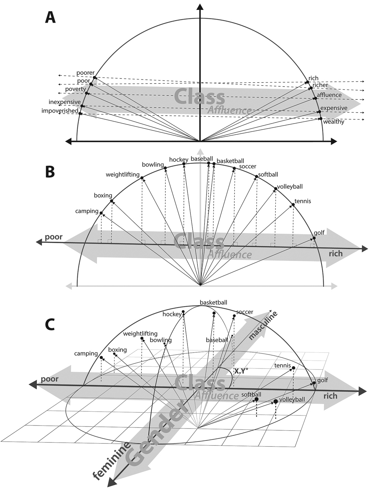
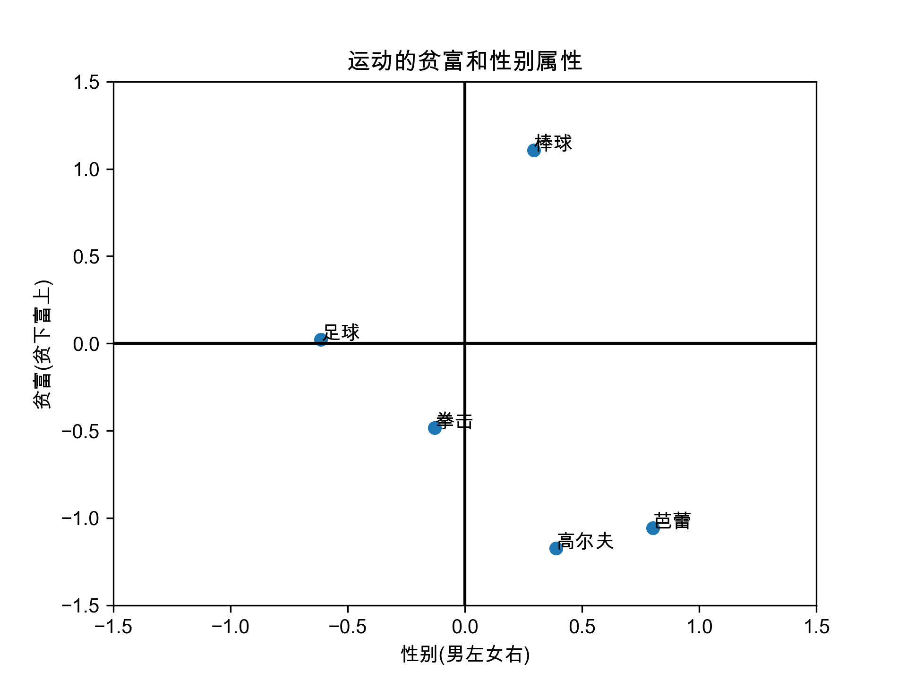
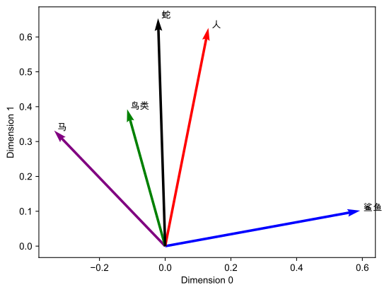
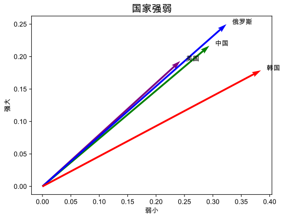
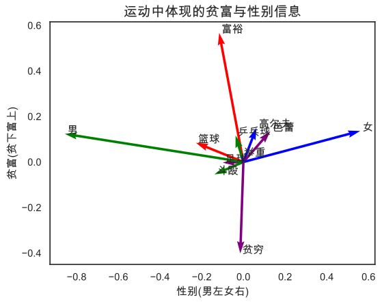
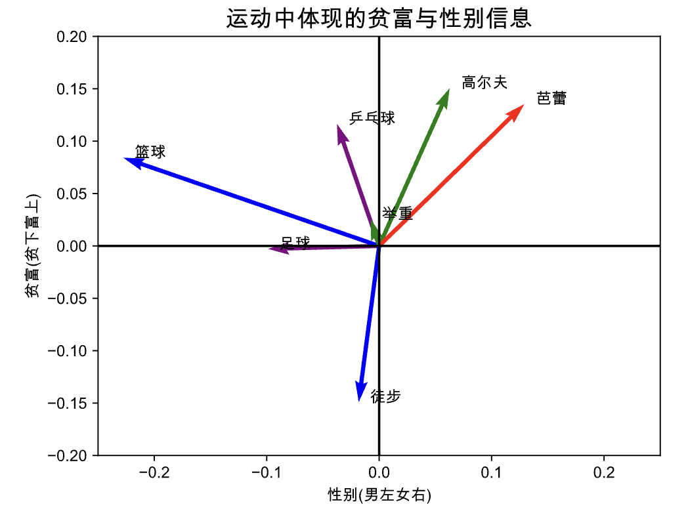
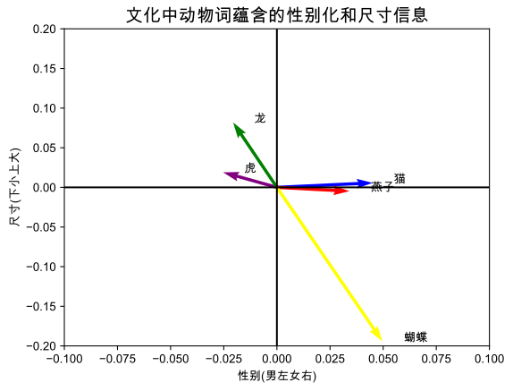

语言的文字反映了人类思想的结构，使我们能够在个人之间传递思想， 而使用大规模语料训练得来的词嵌入模型往往蕴含着这类信息。
1.1 国内外社科方面的应用
在国内社科领域， 应用词嵌入 主要用来做情感分析，大致的算法(思路)是
- 训练词向量模型
- 根据词向量cosine或欧几里得距离，度量词语的相似性，进而扩展某种概念词典
- 检查扩充的概念词典，剔除无效词后。
- 使用整理好的概念词典，统计文本中出现该概念的词频，当做该概念的代理指标。
但词嵌入在国外社科领域， 不用传统方法，使用文本数据，也能做出 **刻板印象、性别种族歧视、词语百年来语义变迁、女性高管就职后公司内性别观念变化、测量创新力(发散思维)**等议题的实证研究。
下图是「阶级财富性别与运动」，摘自2019年文化几何学这篇论文。

Kozlowski, Austin C., Matt Taddy, and James A. Evans. “The geometry of culture: Analyzing the meanings of class through word embeddings.” American Sociological Review 84, no. 5 (2019): 905-949.
本文主要内容是实现这类文化几何学图的中文可视化。
1.2 之前分享过的资料
之前大邓分享过的词嵌入稍有涉及，感兴趣的可以阅读我之前分享的文章
- 豆瓣影评 | 探索词向量妙处
- Python | 词移距离(Word Mover’s Distance)
- WordBias库 | 发现偏见(刻板印象)的交互式工具
- 词嵌入测量不同群体对某概念的态度(偏见)
- whatlies库 | 可视化词向量
- PNAS | 使用语义距离测量一个人的创新力(发散思维)得分
- 中文词向量资源汇总 & 使用方法
- 词嵌入技术在社会科学领域进行数据挖掘常见39个FAQ汇总
- 转载 | 大数据时代下社会科学研究方法的拓展——基于词嵌入技术的文本分析的应用
但可视化分享的不多，本文将用公开的中文预训练模型，验证可视化中文圈的群体记忆、刻板印象、偏见等信息。在此先放一张论文中两个截图， 语义概念向量 一般是由语义相反的两组词构成。


Grand, G., Blank, I.A., Pereira, F. and Fedorenko, E., 2022. Semantic projection recovers rich human knowledge of multiple object features from word embeddings. Nature Human Behaviour, pp.1-13.
概念向量的计算方法
- 二维坐标系下，点和向量都可以用二维数组(m, n)表示。同理，在n维空间中，点和向量都是n维数组。
- 将多个近义的词向量， 通过平均法创建出一个 均值端点。
- 语义完全相反的两个均值端点， 通过减法操作， 得到 概念向量
为啥每个端点向量用多个词计算？
单个词变动较大， 为了保证语义的稳定性，最好是找一组词构成概念的一个端点。
二、准备工作
下载预训练模型，可以查看这篇文章获取
之后安装好本节需要的python包
!pip3 install whatlies==0.7.0
!pip3 install matplotlib_inline
!pip3 install gensim==4.2.0
三、导入预训练模型
使用 gensim 库导入预训练模型，这里我本地保留的是预训练模型是word2vec中的sgns算法训练出来的。 导入后的数据是 KeyedVectors 类型的数据。
from gensim.models.keyedvectors import KeyedVectors
# 微博 sgns.weibo.word.bz2 为例
weibo_wv = KeyedVectors.load_word2vec_format('embeddings/sgns.weibo.word.bz2',
binary=False,
unicode_errors='ignore')
# 知乎 sgns.renmin.word.bz2
zhihu_wv = KeyedVectors.load_word2vec_format('embeddings/sgns.zhihu.word.bz2',
binary=False,
unicode_errors='ignore')
# 中文维基
wiki_wv = KeyedVectors.load_word2vec_format('embeddings/sgns.wiki.word.bz2',
binary=False,
unicode_errors='ignore')
3.1 预训练模型的词汇量
weibo_wv、zhihu_wv、wiki_wv是KeyedVectors类型的数据，可以直接查看词汇量
print('预训练模型词汇量')
print('微博: ', len(weibo_wv))
print('知乎: ', len(zhihu_wv))
print('中文维基: ', len(wiki_wv))
Run
预训练模型词汇量
微博: 195202
知乎: 259949
中文维基: 352277
3.2 通用词
使用不同数据集训练，得到的语言模型所含词语会有差异。这里我们查看通用词一共有多少
wiki_vocab = set(wiki_wv.index_to_key)
zhihu_vocab = set(zhihu_wv.index_to_key)
weibo_vocab = set(weibo_wv.index_to_key)
#交集
common_vocab = wiki_vocab & zhihu_vocab & weibo_vocab# intersection
len(common_vocab)
Run
118539
3.3 提取某个词的向量
以维基百科为例， 查看「幸福」的词向量
#只显示向量的前20个数字
wiki_wv['幸福'][:20]
Run
array([ 0.159344, 0.280468, -0.236876, -0.198076, -0.170838, 0.027264,
-0.349646, 0.289169, -0.421038, -0.470539, 0.247534, 0.112968,
0.355498, 0.479956, 0.093291, 0.081054, -0.046995, -0.624586,
0.568242, 0.16665 ], dtype=float32)
3.4 查看词向量的维度
查看向量的长度（维度），以「幸福」为例
print('预训练模型维度数')
print('微博: ', len(weibo_wv["幸福"]))
print('知乎: ', len(zhihu_wv["幸福"]))
print('中文维基: ', len(wiki_wv["幸福"]))
Run
预训练模型维度数
微博: 300
知乎: 300
中文维基: 300
#单个词向量的尺寸
wiki_wv['幸福'].shape
Run
(300,)
3.5 计算多个词向量的均值向量
先看一下多个词提取后得到的数据形状
wiki_wv[['男', '男孩', '父亲', '爷爷']].shape
Run
(4, 300)
4个词，每个词都是300维的词向量。如果计算4个词向量的均值向量，返回的尺寸应该是 (300,)
male_vector = wiki_wv[['男', '男孩', '父亲', '爷爷']].mean(axis=0)
male_vector.shape
Run
(300,)
3.6 最相似的词
网上的教程经常分享最相似的词，这里我们也实验一下。
wiki_wv.most_similar("社会", topn=10)
Run
[('于社会', 0.6210986971855164),
('社会上', 0.5995474457740784),
('社会关系', 0.5894029140472412),
('各阶层', 0.5799717903137207),
('社会制度', 0.5777087211608887),
('社会变迁', 0.5756841897964478),
('令社会', 0.575627326965332),
('社会变革', 0.5755838751792908),
('思想观念', 0.5752044916152954),
('社会存在', 0.573627769947052)]
weibo_wv.most_similar("社会", topn=10)
Run
[('金钱至上', 0.5815222859382629),
('各阶层', 0.5668456554412842),
('福利制度', 0.5532322525978088),
('官与民', 0.5526734590530396),
('高考制度', 0.5515810251235962),
('资源分配', 0.5500271916389465),
('功利主义', 0.5484314560890198),
('分级制', 0.5450907349586487),
('功利化', 0.5432640910148621),
('法制建设', 0.5420899391174316)]
zhihu_wv.most_similar("社会", topn=10)
Run
[('社会存在', 0.6277482509613037),
('社会生活', 0.613935649394989),
('社会群体', 0.6123108863830566),
('社会意识', 0.6055717468261719),
('物欲横流', 0.6041101217269897),
('民主决策', 0.602908194065094),
('阶级分化', 0.59609454870224),
('社会上', 0.5932644605636597),
('于社会', 0.5919737219810486),
('法制化', 0.5820874571800232)]
四、 可视化
为了让中文可以在matplotlib正常显示， 需要先运行下方代码
import matplotlib.pyplot as plt
import matplotlib
import platform
import matplotlib_inline
matplotlib_inline.backend_inline.set_matplotlib_formats('png', 'svg')
system = platform.system() # 获取操作系统类型
if system == 'Windows':
font = {'family': 'SimHei'}
elif system == 'Darwin':
font = {'family': 'Arial Unicode MS'}
else:
# 如果是其他系统，可以使用系统默认字体
font = {'family': 'sans-serif'}
matplotlib.rc('font', **font) # 设置全局字体
4.1 运动的贫富和性别属性
先看一个最难的例子， 后面的例子都是围绕ta展开的。
- 性别向量 由 男性均值端点向量 和 女性均值端点向量 计算得来
- 贫富向量 由 富裕均值端点向量 和 贫穷均值端点向量 计算得来
需要注意， 不论是 性别向量、贫富向量 还是运动词的词向量，都是 300维的向量。 如果在低维空间，例如2维坐标轴中可视化，需要做投影操作。这里需要一点大学线性代数的点乘知识。
import numpy as np
# 获取需要绘制的单词列表
words = ['足球', '拳击', '高尔夫', '棒球', '芭蕾']
# 获取词向量，并转换为 NumPy 数组
vectors = np.array([wiki_wv[word] for word in words])
# 选择两个词向量作为新坐标系的 x 轴和 y 轴
x_axis = wiki_wv[['女', '女孩', '母亲', '奶奶']].mean(axis=0) - wiki_wv[['男', '男孩', '父亲', '爷爷']].mean(axis=0)
y_axis = wiki_wv[['贫穷', '拮据', '囊中羞涩', '困难']].mean(axis=0) - wiki_wv[['富裕', '富有', '贵气', '财富']].mean(axis=0)
# 计算每个词向量在新坐标系中的投影
x_coords = np.dot(vectors, x_axis)
y_coords = np.dot(vectors, y_axis)
# 绘制图形
fig, ax = plt.subplots()
ax.scatter(x_coords, y_coords)
for i, word in enumerate(words):
ax.annotate(word, (x_coords[i], y_coords[i]))
# 绘制 x 轴和 y 轴的十字线
ax.axhline(y=0, color='k')
ax.axvline(x=0, color='k')
plt.xlim(-1.5, 1.5)
plt.ylim(-1.5, 1.5)
plt.xlabel('性别(男左女右)')
plt.ylabel('贫富(贫下富上)')
plt.title('运动的贫富和性别属性')
#plt.show()
#保存
plt.savefig(fname="img/运动的贫富和性别属性.png", dpi=300)

4.2 使用whatlies处理数据
上面的可视化代码太长了，使用whatlies可以简化代码量。我们把 KeyedVectors类 转为 EmbeddingSet类，这里就可以更容易的把点显示为带箭头的向量。
from whatlies import Embedding, EmbeddingSet
# load vectors as whatlies EmbeddingSet
wiki_emb = EmbeddingSet.from_names_X(names=wiki_wv.index_to_key,
X=wiki_wv.vectors)
weibo_emb = EmbeddingSet.from_names_X(names=weibo_wv.index_to_key,
X = weibo_wv.vectors)
zhihu_emb = EmbeddingSet.from_names_X(names=zhihu_wv.index_to_key,
X=zhihu_wv.vectors)
# list similar words, n=10
wiki_emb.score_similar("社会", n=10)
Run
[(Emb[社会], 5.960464477539063e-08),
(Emb[于社会], 0.3789013624191284),
(Emb[社会上], 0.4004524350166321),
(Emb[社会关系], 0.410597026348114),
(Emb[各阶层], 0.42002809047698975),
(Emb[社会制度], 0.4222911596298218),
(Emb[社会变迁], 0.42431581020355225),
(Emb[令社会], 0.42437267303466797),
(Emb[社会变革], 0.424416184425354),
(Emb[思想观念], 0.4247954487800598)]
weibo_emb.score_similar("社会", n=10)
Run
[(Emb[社会], 0.0),
(Emb[金钱至上], 0.41847753524780273),
(Emb[各阶层], 0.43315428495407104),
(Emb[福利制度], 0.4467676877975464),
(Emb[官与民], 0.4473266005516052),
(Emb[高考制度], 0.4484187364578247),
(Emb[资源分配], 0.44997286796569824),
(Emb[功利主义], 0.4515683650970459),
(Emb[分级制], 0.45490920543670654),
(Emb[功利化], 0.4567357897758484)]
4.3 whatlies默认可视化
使用whatlies默认的效果绘制如下，但需要注意， 这里的Dimension0和Dimension1的含义是未知的。所以除了可视化， 含义解读起来比较困难。
# the default X and Y axes are the first two dimensions of the embedding vectors
wiki_emb["马"].plot(kind="arrow",
color="purple")
wiki_emb["鲨鱼"].plot(kind="arrow", color="blue")
wiki_emb["鸟类"].plot(kind="arrow", color="green")
wiki_emb["人"].plot(kind="arrow", color="red")
wiki_emb["蛇"].plot(kind="arrow", color="black")
plt.show()

4.4 使用端点向量当基向量
使用端点向量当基向量，
vecs = wiki_emb["美国", "中国", "俄罗斯", "韩国"]
vecs.plot(x_axis=wiki_emb["弱小"],
y_axis=wiki_emb["强大"],
color=["purple", "green", "blue", "red"])
#plt.show()
plt.title('国家强弱', fontsize=15, fontweight='bold')
plt.savefig(fname="img/国家强弱.png", dpi=300)

按照我们的理解， 强大与弱小是方向相反的。但是如果将这两个词分别做基向量。如图所示，就体现不出方向。
同时，因为给定有意义的基向量作为坐标轴向量， 坐标轴含有了意义，可视化的结果可以看出语义信息的亲疏远近。
可以看到， 中美俄是大国强国，韩国是小国军事弱国。
4.5 使用概念向量当做基向量
当使用概念向量做基向量， 我们就能保留住词语之间的正反方向。避免 4.4 反义词之间无法体现方向性信息。
#待考察词
vecs = wiki_emb['足球', "斗殴", '高尔夫', '篮球', '芭蕾', '男', '女', '富裕', '贫穷', '乒乓球', '举重']
#性别概念向量
sex_vector = wiki_emb[['女', '女孩', '母亲', '奶奶']].average() - wiki_emb[['男', '男孩', '父亲', '爷爷']].average()
#贫富概念向量
disparity_vector = wiki_emb[['富裕', '富有', '贵气', '财富']].average() - wiki_emb[['贫穷', '拮据', '囊中羞涩', '困难']].average()
#概念向量 做 基向量
vecs.plot(x_axis= sex_vector,
y_axis= disparity_vector,
color=["purple", "green", "blue", "red"])
#plt.show()
plt.title('运动中体现的贫富与性别信息', fontsize=15, fontweight='bold')
plt.xlabel('性别(男左女右)')
plt.ylabel('贫富(贫下富上)')
plt.savefig(fname="img/运动中体现的贫富与性别信息.png", dpi=300)

刚刚的图中加入了男、女、贫穷、富裕四个词，是为了帮助我们识别出方向来的，判断横纵坐标的含义和方向性。现在我们可以去掉这四个词，绘制更美观的图。
vecs = wiki_emb['足球', '高尔夫', '篮球', '芭蕾', '乒乓球', '举重', '徒步']
sex_vector = wiki_emb[['女', '女孩', '母亲', '奶奶']].average() - wiki_emb[['男', '男孩', '父亲', '爷爷']].average()
disparity_vector = wiki_emb[['富裕', '富有', '贵气', '财富']].average() - wiki_emb[['贫穷', '拮据', '囊中羞涩', '困难']].average()
vecs.plot(x_axis= sex_vector,
y_axis= disparity_vector,
color=["purple", "green", "blue", "red"])
#plt.show()
plt.title('运动中体现的贫富与性别信息', fontsize=15, fontweight='bold')
plt.xlim(-0.25, 0.25)
plt.ylim(-0.2, 0.2)
plt.axhline(y=0, color='k')
plt.axvline(x=0, color='k')
#plt.axis('off')
plt.xlabel('性别(男左女右)')
plt.ylabel('贫富(贫下富上)')
plt.savefig(fname="img/运动中体现的贫富与性别信息.png", dpi=300)

从上图可以看出， 在wiki百科中记录下的， 我们对不同运动是存在贫富、性别化的信息。这些信息根据研究场景，解读为刻板印象、态度偏好、文化记忆等。 我们再看一个例子， 把中国动物(含神兽)分别在性别维度和尺寸维度可视化。
vecs = wiki_emb['虎', '龙', '猫', '燕子', '蝴蝶']
sex_vector = wiki_emb[['女', '女孩', '母亲', '奶奶']].average()-wiki_emb[['男', '男孩', '父亲', '爷爷']].average()
size_vector = wiki_emb[['大', '庞', '巨', '高']].average() - wiki_emb[['矮', '小', '微', '毫']].average()
vecs.plot(x_axis= sex_vector,
y_axis= size_vector,
color=["purple", "green", "blue", "red", "yellow", "grey"])
#plt.show()
plt.title('文化中动物词蕴含的性别化和尺寸信息', fontsize=15, fontweight='bold')
plt.xlim(-0.1, 0.1)
plt.ylim(-0.2, 0.2)
plt.axhline(y=0, color='k')
plt.axvline(x=0, color='k')
#plt.axis('off')
plt.xlabel('性别(男左女右)')
plt.ylabel('尺寸(下小上大)')
plt.savefig(fname="img/文化中动物词蕴含的性别化和尺寸信息.png", dpi=300)

代码获取
公众号: 大邓和他的Python， 同日期推文， 付费阅读获取全文教程、数据、代码~